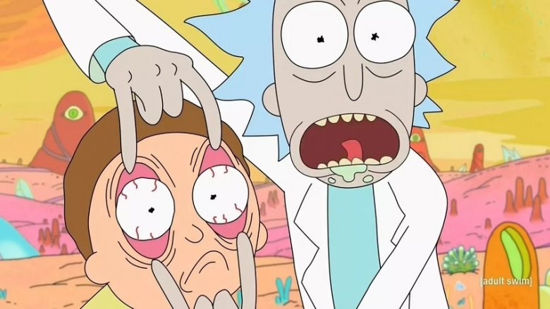

Rick and Morty
Wubba lubba
Dub Dub!
Summary
Rick Sanchez, a depressed, alcoholic, abusive, madman (who also happens to be a genius scientist with the ability to travel through dimensions) returns to his daughter Beth's life after two decades of being silent between the two. He finds her married to an incompetent, pathetic man named Jerry, and the couple has two teenage kids. Summer, the oldest girl, is a rebellious teen looking to have more friends at school, and Morty, the youngest child and a boy, is an anxious, quiet, and sweet kid. Rick makes Morty his sidekick and takes him on hilarious Interdimensional adventures, causing poor Morty to become steadily more miserable due to Rick's insane, abusive, and careless additude.
Characters
Facts About Rick And Morty You May Not Know
-
The pilot was written in just a few hours
 -
Rick's catchphrase was a complete accident

-
Rick's signature burps were an accident, too

-
Rick and Morty's dynamic is a representation of mental illness

Watch the show